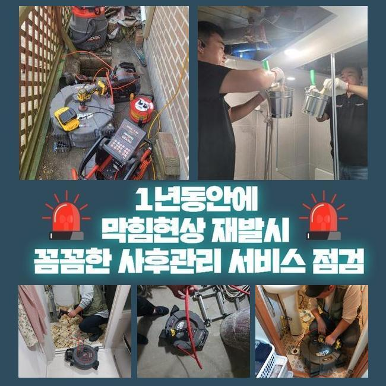
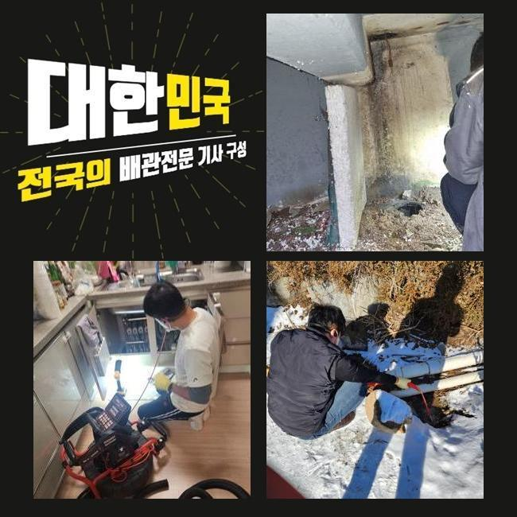
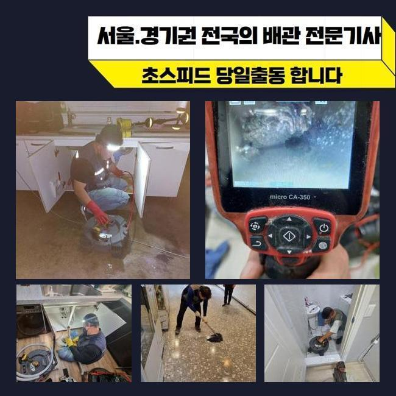
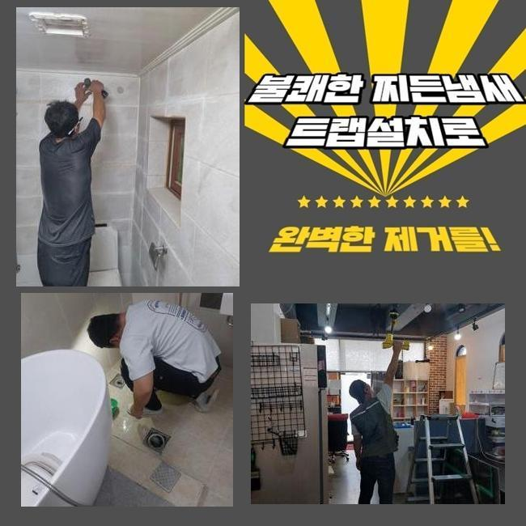
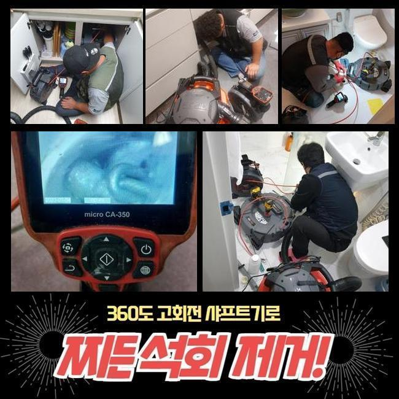
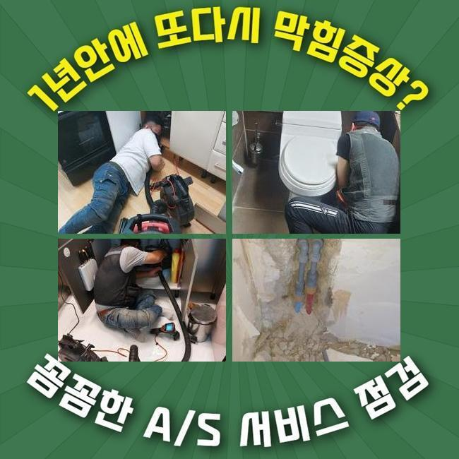

🏠 인천 석남동하수구뚫음 불로동 횡주관청소 누수
인천 남동 하수구막힘 전문 시공 후기

📋 작업 개요
- 위치: 인천 남동, 남동, 인천
- 서비스 유형: 하수구막힘, 배관막힘, 누수수리, 역류해결, 뚫는업체, 배관청소, 악취차단
- 작업 일시: 2025. 3. 5. 22:16
- 업체명: 하수구수사대 (010-5615-2118)
🔍 문제 상황
인천 석남동하수구뚫음 불로동 횡주관청소 누수
욕실이나 주방공간은 없어서는 안될 곳이죠
그러므로 일상중에 갑작스럽게 배수기능에 문제가 생기면 고충은 상당하겠죠
반면 배수기능이 약해지는 것에 대해 크게 신경쓰지 않으시는 케이스도 생각외로 많답니다
얼마간의 기간이 지나면 사태가 완화되거나 심각한 문제로 전이되지는 않을거라 생각하기 때문이에요
하지만 실제는 그것과 다르죠
이와 관련 그것을 처음시기에 온전하게 소제한다면 심각한 형국을 피해갈수 있을거에요
물빠짐이 느리게 된다는건 관로의 어딘가에 흐름성에 장애를 일으키는 슬러지가 상존한다는 이야기에요
찌꺼기가 또 누적되어서 더욱더 고약한 사태로 치닫기 전 전문업체에 의뢰하여 적합하게 검정을 실시하고 순차적으로 청소해야 돼요
5일전 방문하였던 데를 세부적으로 말씀드리고자 하는데요
유사한 증세로 기술자를 찾고계시는 이웃분들에게 도움되기를 간절히 원합니다
저희들이 방문드렸던 지점은 빌딩 안에 위치한 음식점이에요
일주일전 쯤부터 화장실과 주방시설에 이르기까지 전면적으로 물흐름이 멈췄다고 말씀하셨죠

🔎 원인 분석
💡 전문가 진단: 정밀 진단 장비를 사용하여 슬러지의 고착 여부를 판명하고 타격/세척 작업을 실시했습니다.
100% 멈춘건 아니었으며 하루지나면 소멸되어서 차후에 고쳐보자는 생각으로 영업하고 있으셨다고 하네요
그 상태로 방치하니 사태가 악화되어서 하수처리가 안되었고 물이 역류되는 사태까지 동반된 것이랍니다
배수관은 복잡하고 좁다란 통로로 형성돼 있죠
따라서 표면적으로 살펴봐서는 슬러지가 얼마만큼 상존하는지 파악하기 힘들죠
그렇기에 시공현장으로 이동할때는 내시경cctv를 꼭 챙겨두어야 합니다
해당 기기의 끝부분엔 전용카메라가 있어요
그것으로 파악하기 곤란한 파이프 하부까지 선명하게 검사가 가능한것이며 찌꺼기의 종류까지 파악할수 있는거죠
내시경기기로 관찰한 파이프 속은 엄청나게 더러웠는데요
석회성분을 포함하여 여러가지의 노폐물들이 누증된 상태였죠
이런 오염물질들이 뒤엉켜서 돌처럼 굳은 상태였기 때문에 좁디좁은 배수길을 차단하여 물빠짐이 올바로 안되었답니다
이것들을 방치하는 경우엔 크기를 더욱더 키워가며 하수관벽에서 떨어지기 힘들게 되겠죠
그리된다면 한층 정황이 나빠지는 것이기에 신속하게 시공하기로 했어요
이러한 상황에서 쓰는 기기는 샤프트입니다

🔧 작업 과정
비좁아진 공간으로도 수월하게 진입이 되는 강점이 존재하죠
장비끝에는 노커라는 쇠붙이가 붙어서 빠르게 회전하며 관로안에 상존하는 견고해진 여러가지 침전물을 파쇄하여 줍니다
전면적으로 분쇄공정을 진행했는데요
전동기기와 노커를 연결하고 나서 샤프트기계를 돌려 벽면에 붙은 찌꺼기들을 소멸시키기 시작하였죠
어떠한 지점에 잔존물들이 분포되어 있나 간파해야 돼서 내시경카메라를 활용한 관찰도 병행하였습니다
이것을 통하여 적층량이 많은지점을 우선으로 작업한다면 한층 재조속히 처리할수 있답니다
배관의 벽면이 훼손되지않게 조심하며 잔재들만을 명확하게 겨냥하여 제거해 나갔습니다
만약 작업중에 배수관에 압력을 준다면 균탁이 발생하여 누수증세가 발생할수도 있죠
그러므로 배관카메라나 분쇄장비가 준비되어야 하는것도 중요하지만 시공자의 기술력도 우수하여야 하겠습니다
이물들이 누적된 구간을 정결하게 정비하고나서 미세한 성분이라도 남지 않도록 처리하였답니다
그다음 즉시 배수테스트를 진행했죠
수돗물을 양동이에 담아 한꺼번에 하수관으로 투입시켰고 체류하거나 솟아오르는 증상은 없는지에 대해 조사해 보았죠
신속하게 소멸되는걸 검증한후 즉각 인접한 배수시설로 건너가게 되었네요
이쯤하고 마감한다면 한두달 이용에는 괜찮을수 있으나 몇달뒤 막힘증세가 나타날 확률이 높기 때문이었어요
욕실내의 개별배관과 결부된 횡주배관도 검사해서 노폐물 누적 상황을 파악해나가기로 합니다
욕실배관이 막혀버리면 관계된 메인관로에까지 노폐물이 적층되었을 가망성이 높기에 전면적 관로청소를 진행하는게 바람직하죠
그렇기에 횡주관으로 이동해 점검을 이어나갔으며 저희측의 생각과 유사하게 단단해진 찌꺼기들을 목견하게 되었네요
횡주관과 관련된 개별배수관까지 전면적으로 샤프트기기를 통해 청소했고 찌꺼기가 제거된 깔끔해진 배수관을 목도할수 있었죠
머리카락이나 물티슈 등 녹아내리기 힘든 쓰레기들은 욕실을 이용하시면서 다시 쌓일 수 달려있어요
그러하기에 일년에 한두번은 배관기술자를 통하여 관리하시는게 좋답니다
그리고 오래도록 배수관을 관리하는 방안들도 인지하시기 쉽게 차근차근 알려드렸어요


✅ 작업 완료
배수문제에 직면한다면 삶에 큰 고충을 맞닥뜨리게 되니 초기에 그런 상황까지 발전하지 않게끔 주기적인 진단과 청소를 시행하는게 합당합니다
늦은 시간에도 출장가능하다는 부분도 말씀드렸답니다
건축한 지 30년 정도된 건물에선 누설도 종종 발생되기에 그것에 관한 시공문의도 많답니다
이에 즉각 뚫음뿐만 아니라 누수작업도 시행중에 있다는걸 안내해 드렸어요
어느위치에서 물막힘이 일어났으며 언제 시작되었는지 간략하게 전달해주시면 더 빠르게 상담해드릴 수 있습니다
그러고 나서 예약하신 때에 담당자가 전문공구들을 가지고 방문드리니 필요할때 문의주시길 부탁드립니다




⚠️ 베란다 누수 및 방수 관리 방법
- ✅ 비가 많이 올 때 창틀 주변이나 아래층 천장에 얼룩이 생기는지 정기적으로 확인해 보세요.
- ✅ 우수관 주변 실리콘 마감이 들뜨거나 깨진 틈새가 있는지 손상 여부를 수시로 체크하세요.
- ✅ 베란다 바닥 타일의 줄눈(메지)이 소실되면 그 틈으로 물이 침투하여 누수가 유발됩니다.
- ✅ 누수 의심 증상 발견 시 방치하면 아래층 손실이 커지므로 즉시 전문가의 진단을 받으십시오.
💡 핵심 정리
- 확실한 장비 작업(내시경 점검 및 샤프트 스케일링)으로 원인을 뿌리 뽑습니다.
- 작업 후 1년 이내에 동일한 부위 재발 시 100% 무상 A/S 서비스를 보장합니다.
- 서울 · 경기 · 인천 전 지역에 24시간 언제든 긴급 출동할 수 있도록 항시 대기 중입니다.
❓ 자주 묻는 질문 (FAQ)
🚨 인천 남동 하수구막힘 문제로 고민이신가요?
정확한 원인 진단과 확실한 시공으로 재발 없는 해결을 약속드립니다.
24시간 긴급 출동 | 서울 · 경기 · 인천 전지역 | 1년 내 재발 시 무상 A/S